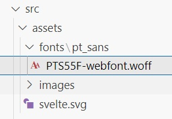

Installation using Vite
-
npm create vite@latest
- Select the prefered options
-
To start development server,
npm run dev
-
Custom port for development, change package.json as follows
{ "dev": "vite --port=8181", "build": "vite build", "preview": "vite preview" } -
To build production release,
npm run build
-
BaseUrl production release, change package.json as follows
{ "dev": "vite", "build": "vite build --base=/sveltemyapp/", "preview": "vite preview" }
Fonts
You can use local fonts
- 
-
@font-face { font-family: "pt_sansregular"; src: url("assets/fonts/pt_sans/PTS55F-webfont.woff") format("woff"); font-weight: normal; font-style: normal; } html { font-family: "pt_sansregular"; }
Using Font-Awesome
npm install svelte-fa --verbose
npm install @fortawesome/free-regular-svg-icons npm install @fortawesome/free-solid-svg-icons npm install @fortawesome/free-brands-svg-icons
<script>
import Fa from "svelte-fa";
import { faFolder } from "@fortawesome/free-regular-svg-icons";
import { faFlag } from "@fortawesome/free-solid-svg-icons";
import { faGithub } from "@fortawesome/free-brands-svg-icons";
let count = $state(0);
const increment = () => {
count += 1;
};
</script>
<div class="box">
<h3>{count}</h3>
<div class="list">
<span class="icon"><Fa icon={faFlag} size="2x" /> </span>
<Fa icon={faFolder} color="#0000ff" />
<Fa icon={faGithub} color="#00ff00" size="3x" rotate={90} />
</div>
<button onclick={increment}>Increment</button>
</div>
<style>
.box {
border: 1px solid black;
border-radius: 4px;
padding: 10px;
}
.list {
padding: 10px;
}
.icon {
color: #003a91;
}
.icon:hover {
color: #f54e00;
cursor: pointer;
}
</style>TypeDoc in Vite Svelte
-
Install typedoc as development dependency.
npm install --save-dev typedoc --verbose
- Add docs entry in .gitignore file.
-
Add typedoc.json file in your root directory where package.json is located.
For more details, refer typedoc{ "exclude": ["*.svelte"], "entryPoints": ["src/main.ts"], "out": "docs" } -
Add new command in package.json for documentation.
"scripts": { "dev": "vite", "build": "vite build", "preview": "vite preview", "check": "svelte-check --tsconfig ./tsconfig.json", "docs": "npx typedoc --entryPointStrategy Expand src" }, -
To generate the documentation, run following command.
npm run docs
Deploy Svelte Vite app to github pages
- Publish the source as public repository on github. Private repository is not allowed.
-
Add gh-pages as development dependency.
npm install --save-dev gh-pages --verbose
-
Add base attribute in vite.config.js
import { defineConfig } from "vite"; import { svelte } from "@sveltejs/vite-plugin-svelte"; export default defineConfig({ base: "/circuit-app/", plugins: [svelte()], }); -
In package.json, add deploy command in package.json
"scripts": { "dev": "vite", "build": "vite build", "preview": "vite preview", "check": "svelte-check --tsconfig ./tsconfig.json", "docs": "npx typedoc --entryPointStrategy Expand src" "deploy":"npx gh-pages -d dist" } -
To deploy the app, run following command
npm run deploy
Vite Path aliases in Typescript
-
Install vite-tsconfig-paths as dev dependency.
npm install --save-dev vite-tsconfig-paths --verbose
- Add plugin in vite.config.ts
- Add paths array in tsconfig.json
- You can use path mapping in svelte files.
-
import { defineConfig } from "vite"; import { svelte } from "@sveltejs/vite-plugin-svelte"; import tsconfigPaths from "vite-tsconfig-paths"; export default defineConfig({ base: "/snake/", plugins: [svelte(), tsconfigPaths()], }); -
{ "extends": "@tsconfig/svelte/tsconfig.json", "compilerOptions": { "target": "ESNext", "useDefineForClassFields": true, "module": "ESNext", "resolveJsonModule": true, "baseUrl": ".", "paths": { "$stores/*": ["src/stores/*"], "$models/*": ["src/models/*"], "$helpers/*": ["src/helpers/*"], "$components/*": ["src/components/*"], "$screens/*": ["src/components/screens/*"], "$gameItems/*": ["src/components/game-items/*"] }, "allowJs": true, "checkJs": true, "isolatedModules": true }, "include": ["src/**/*.d.ts", "src/**/*.ts", "src/**/*.js", "src/**/*.svelte"], "references": [{ "path": "./tsconfig.node.json" }] } -
import { swipe } from "svelte-gestures"; import { scoreStore } from "$stores/scoreStore"; import type { ScoreInfo, ScreenStatus } from "$models/gameState"; import { Directions, Config, KeyMap, EnumMessages } from "$helpers/constants"; import Food from "$gameItems/Food.svelte"; import { Levels } from "$models/level"; import { getId } from "$helpers/common"; import { FoodTypes, type BonusItem, type FoodItem, type SnakeItem } from "$models/play-screen";
JavaScript Path Aliases
-
import { defineConfig } from "vite"; import { svelte } from "@sveltejs/vite-plugin-svelte"; export default defineConfig({ plugins: [svelte()], resolve: { alias: { "@components": "/src/components", "@stores": "/src/stores", }, }, }); -
{ "compilerOptions": { "moduleResolution": "Bundler", "target": "ESNext", "module": "ESNext", "verbatimModuleSyntax": true, "isolatedModules": true, "resolveJsonModule": true, "sourceMap": true, "esModuleInterop": true, "skipLibCheck": true, "checkJs": true, "baseUrl": "./", "paths": { "@components/*": ["src/components/*"], "@utils/*": ["/src/stores/*"] } }, "include": ["src/**/*.d.ts", "src/**/*.js", "src/**/*.svelte"] } -
<script> import Crud from "@components/Crud.svelte"; import ParentComponent from "@components/ParentComponent.svelte"; </script>